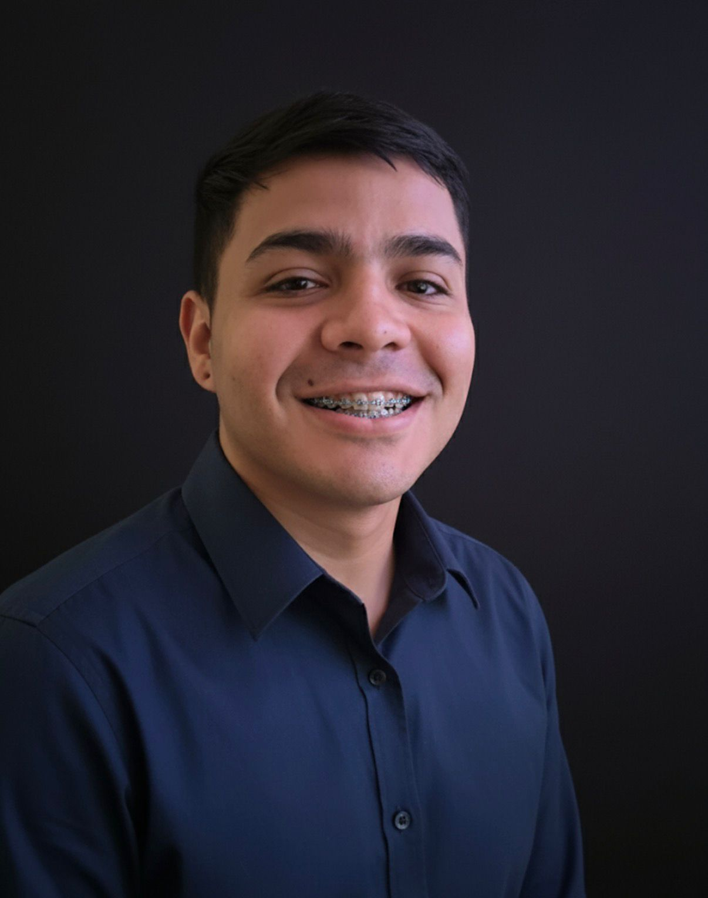

Hi, I'm
Operations & Supply Chain | Systems Engineering
Operations professional and Computer Engineering student with nearly 3 years of hands-on experience in supply chain, ERP systems, and enterprise data management. Technical background in IT support, cloud services, and containerization — bridging day-to-day operations and the systems that support them.

SAP ERP, Inventory Control, Supply Chain, Process Optimization
Data Annotation, QC Validation, Computer Vision, Excel
AWS (IAM), Docker, HTML/CSS, PC Maintenance
Spanish (Native), English (B2+)
BMA Group Global · San José, Hybrid
Kerry Group · Pavas, San José
Vivero ASECAN · Costa Rica